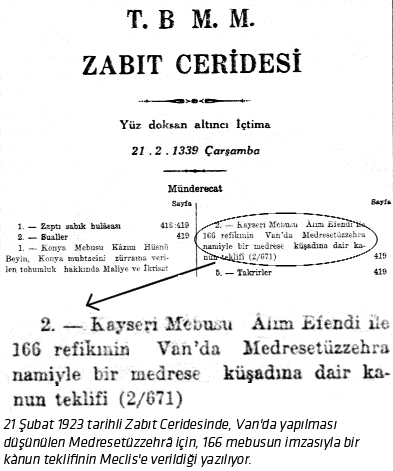
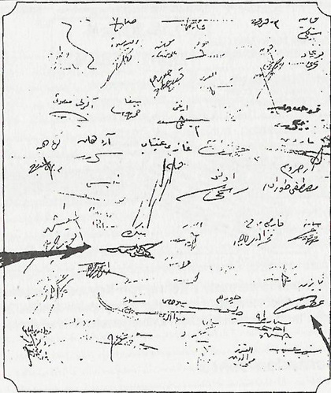
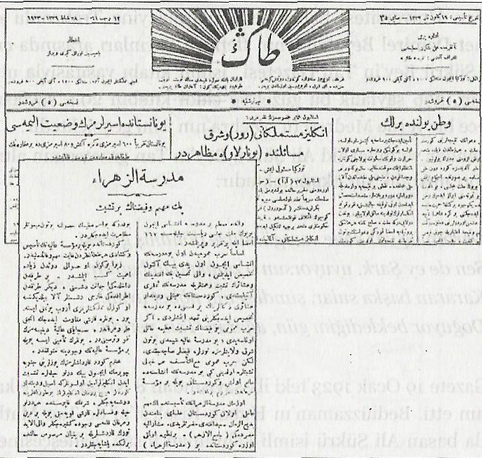

|
Alim Efendi'nin Medresetüzzehra teklifi |
  
|
|
Alim Efendi'nin Medresetüzzehra teklifi |
|
Alim Efendi'nin Medresetüzzehra teklifi

Medresetüzzehrâ'nýn belgesi
Z.C., I. Devre, Cilt 27, Ýçtima Senesi 3, 21.2.1339, 196. içtima.
Münderecat
"Kayseri Mebusu Âlim Efendi ile 166 refikýnýn, Van'da Medresetüzzehrâ nâmiyle bir medrese küþâdýna dair kànun teklifi. (2/671)"
Ýç sayfa
"REÝS–Kayseri Mebusu Âlim Efendi ile 167 refîkinin, Van'da Medresetüzzehrâ nâmiyle bir medrese küþâdýna dair teklif–i kànunileri, Lâyiha Encümenine..."diyerek, kanun teklifinin incelenmek üzere, Layiha komisyonuna tevdi’ edildiðini kayd etmiþtir.
Büyük Millet Meclisinin arþivinde bulunan bu belgeler arasýnda son derece dikkat çekici bir karar metni de var.
Bu karar metnine göre, Þer'îye ve Maarif Encümenleri (Komisyonlarý) tarafýndan, "Medresetüzzehrâ Kànunu" kabul edilmiþtir. Ne var ki, bu karar metni komisyonlarda bekletiliyor ve aradan aylar, hatta yýllar geçtiði halde Meclis gündemine bir türlü getirilmiyor. Bu arada, 3 Mart 1924 tarihli Meclis kararýyla, medreselerin kapatýldýðýný hatýrlatmýþ olalým.
Altý çizilmesi gereken bir baþka bilgi notu da þudur:
Medresetüzzehrâ teklifinin Meclis'te okunduðu 21 Þubat 1923 günü, bir baþka açýdan önemli bir tarihtir. Zira o gün, tâ 14 Ocak'ta Ankara'dan ayrýlan ve Ýzmir'den dönerken Lozan'dan gelen Ýsmet Paþa ile Eskiþehir'de buluþup birlikte Ankara'ya dönen M. Kemal'in, toplam bir ay, bir hafta (38 gün) sonra Meclis çalýþmalarýna katýlmýþ olduðu ilk gündür.
Ayrýca, Meclis o gün (21 Þubat) itibariyle "Lozan görüþmeleri" sebebiyle mahfî celse (gizli oturum) þeklinde bir çalýþma yapmýþtýr. Ýsmet Paþa, Lozan görüþmelerine dair Meclis'te geniþ izahatta bulunmuþtur. (Ali Fuat Cebesoy, Siyasî Hatýralar, I. Cilt, s. 233)
Yani, Meclis gündeminin bu derece yoðun ve elektrikli olduðu bir tarihte, Medresetüzzehrâ teklifi de, üstelik mebus çoðunluðunun (167) imzasýyla Meclis'in gündemine damgasýný vuryor.
Üstad, olacaklarý hissetmiþ olmalý ki...
Medresetüzzehrâ projesinin asýl sahibi olan Bediüzzaman Said Nursî, söz konusu teklifin ilgili komisyona gittiðini ve oralarda kabul gördüðünü fark ediyor. Ancak, buna raðmen neticeyi beklemeden Ankara'dan ayrýlýyor.
Üstad, bu ayrýlýþýn sebebini bir eserinde aynen þu sözlerle ifade ediyor: "Mustafa Kemal iki defa þifre ile Van vilâyetinin eski valisi ve benim dostum Tahsin Beyin vasýtasýyla beni, neþredilen Hutuvât–ý Sitte’ye mükâfaten taltif için Ankara’ya celb etti, gittim. Þeyh Sinusî Kürtçe lisaný bilmediðinden, beni onun yerinde üç yüz lira maaþla vilâyât–ý þarkýye vâiz–i umumîsi, hem meb’us, hem Diyanet Riyaseti dairesinde, Dârü’l–Hikmet âzâlarýyla beraber, eski vazifemle memnun etmek ve benim Van’da temelini attýðým Medresetü’z–Zehrâ ve þark dârülfünunuma Sultan Reþad’ýn verdiði on dokuz bin altýn lira, iki yüz mebus içinde yüz altmýþ üç mebusun imzasýyla yüz elli bin banknota iblâð edilerek kabul edildiði halde, ben Beþinci Þua aslýnýn verdiði haberin bir kýsmýný, orada bir adamda gördüm. Mecburiyetle o çok ehemmiyetli vazifeleri býraktým. Ve "Bu adamla baþa çýkýlmaz, mukabele edilmez" diye, dünyayý ve siyaseti ve hayat–ý içtimaiyeyi terk edip yalnýz imaný kurtarmak yolunda vaktimi sarf ettim." (Þualar, Sayfa 314.)
Kendisine yapýlan onca parlak teklife raðmen, Üstad Bedüzaman'ýn Ankara'dan niçin ayrýldýðýnýn sebeb–i hikmetini bu þekilde anlamýþ bulunuyoruz. Üstad, o günden sonra neler olacaðýný fark etmiþ olmalý ki, birlikte çalýþmayý da, siyaset yoluyla çatýþmayý da terk ederek, uzun vâdeli ilmî hizmetini yapmaya karar vermiþtir. (M.Latif Salihoðlu)

Bediüzzaman Hazretleri'nin kurmayý düþündüðü Doðu Anadolu Üniversitesi
Büyük Millet Meclisi'nin aralarýnda Mustafa Kemal ve Ýsmet Ýnönü'nün de bulunduðu toplantýsýnda
150'yi geçen milletvekili tarafýndan kabul edilmiþti

Van-Zehra Üniversitesi'nin ilk Milli Meclis'teki müzakerelerini haber yapan
Tan gazetesinin 28 Þubat 1923 Çarþamba günkü sayýsýnýn baþlýk ve ilk sayfa haberleri (üstte).
Tan gazetesinin sayfa baþýndan verdiði haberin baþlýðýnda þunlarý okumaktayýz:
Medresetü'z-Zehra: Pek Mühim ve Feyiznak bir Teþebbüs (Altta).
Tan gazetesinin Van Üniversitesi ile alakalý haberinden bazý özet kýsýmlar:
Önemli bir ilim irfan bereketi
Van'da muazzam bir medrese inþasý için, Büyük Millet Meclisi riyaset-i celilesine 167 imza ile bir takrir verilmiþtir. Esasen Harb-i Umumî'den evvel bu medresenin inþasý için on yedi bin altýn tahsis edilmiþti.
Vali Tahsin Beyefendinin ve aþairin teþebbüs ve himmetleriyle medresenin temelleri atýlmýþtý. Kürdistan'ýn hamiyetli ve dindar aþairi zekâtlarýnýn bir kýsmýný da bu medreseye tahsis edeceklerini taahhüt etmiþlerdi.
Eðer Harb-i Umumî bu feyzanýn teþebbüs-ü azime hail olmasaydý, bu medrese-i âliye þimdi bütün Þark vilayetlerimize nurlar, feyizler saçacaktý. Lakin Harb-i Umumî maatteessüf her hayýrlý teþebbüslere mâni olduðu gibi, bu medresenin inþasýna da mâni olmuþ ve Kürdistan'ý böyle bir müessese-yi irfandan mahrum býrakmýþtýr.
O zaman Medresetü'z-Zehra'nýn tesisinde en mühim âmil olan, Kürdistan ulemâ-yý benâmýndan (namlý ilim adamlarýndan) Bediüzzaman Said Efendi Hazretleriydi. Kendileri Mýsýr'daki Camiü'l-Ezher'e bir nazire olmak üzere Kürdistan'da bir Medresetü'z-Zehra tesisini gaye-i emel edinmiþlerdi. Ve bu gaye-i ulviyenin tahakkuku için, o havalideki bütün aþairle görüþmüþ, onlarýn muavenet ve müzaheretlerini de temine muvaffak olmuþtu. O sýrada Van'da vali bulunan Tahsin Bey (Uzer) Efendi, bu hususta bahsi geçen büyük insan Said Efendi ile beraber pek çok çalýþmýþlardý.
Þimdi Ankara'da bulunan Bediüzzaman Said Efendi, Þark'ýn böyle bir müessese-i irfana olan þiddetli ihtiyacýna binaen, mebuslara arz ve izah etmiþ ve bunun üzerine bazý mebus arkadaþlarýmýzýn 167'si takrir-i vazý imza ederek riyaset-i celileye takdim etmiþlerdi. Hiç þüphe yok ki, bu emr-i azimin gerçekleþmesi için bütün mebuslar müzaheret (yardýmcý) edeceklerdir.
(...)Bir taraftan dâhildeki cehalet düþmaný, diðer taraftan etraftaki haricî düþmanlar alabildiðine o güzel memleketlerimizi üzüp yutmak istiyor. Bunlara karþý mukavemet edecek ancak ilim ve irfandýr.
Muhterem Kürt kardaþlarýmýzýn yüzlerini yanlýþlýða çevirmek için, bin türlü hayallere teþebbüs eden Ýngilizler emin olsunlar ki, asil ve dindar Kürtler hiçbir zaman Ýngilizlerin bu tuzaklarýna düþmeyeceklerdir.
Þark'ýn kapýsýnda her türlü hayale ve kasýtlarýna karþý koyacak böyle bir din ve irfan kalesi vücuda getirecekler. Ve ilelebed Türk kardeþleriyle bir bünyan-ý mersus (saðlam yapý/bina) halinde birlikte yaþayacaklardýr. Ýnþaallah bu medresenin açýlmasýyla az zaman sonra Van Gölü havzasý mühim bir mekteb-i ilim ve din olacaktýr!
Yüz sene evvel bu Zehra Üniversitesi'nin giriþ levhasýný asan Nur Üstadýn sözü, bugün de, yarýn da insanlýða yol gösterecektir: "Vicdanýn ziyasý, ulum-u diniyedir. Aklýn nuru, fünun-u medeniyedir. Ýkisinin imtizacýyla hakikat tecelli eder. O iki cenah ile talebenin himmeti pervaz eder (kanatlanýr). Ayrýldýklarý vakit birincisinde taassup, ikincisinde hile þüphe çýkar." (Kaynak: Bilinmeyen taraflarýyla Bediüzzaman)